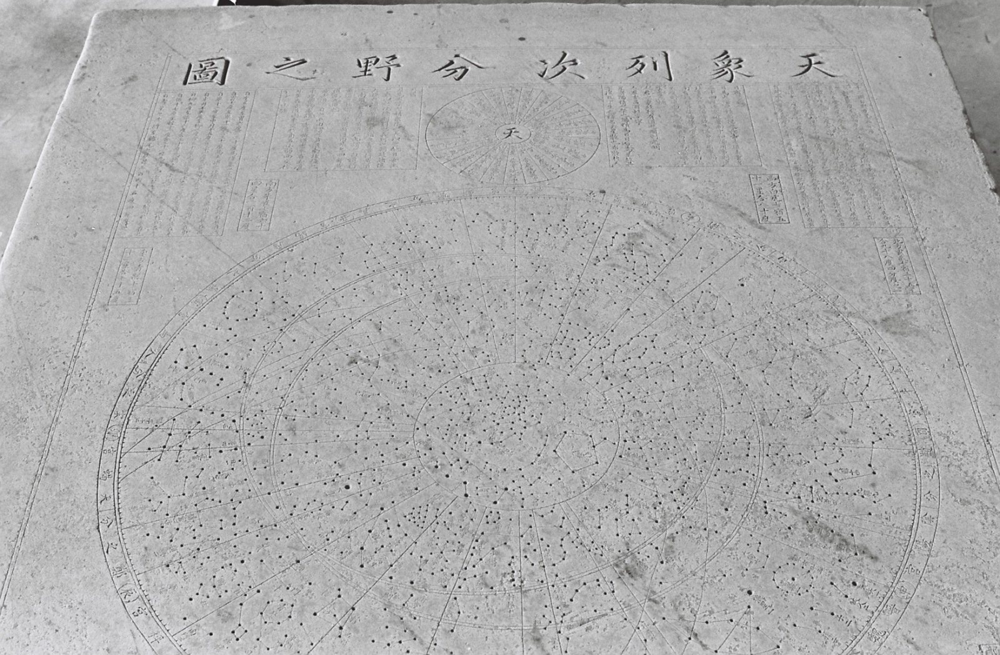
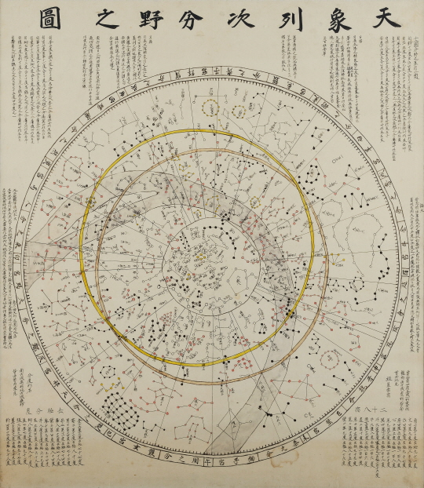
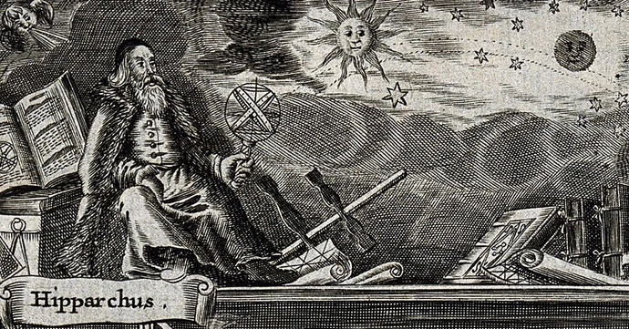
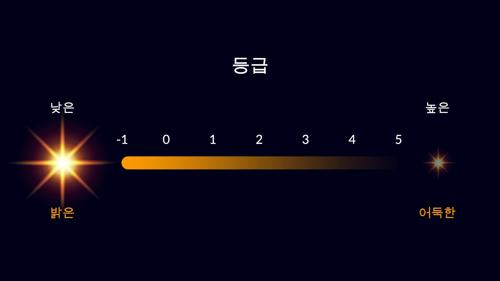

1395년, 조선.
새 나라가 세워졌다.
망원경은 아직 없었다.
오직 두 눈으로 하늘을 올려다보던 시대.
그들은 본 것을 돌에 새겼다.
그 돌이, 600년을 건너 여기에 있다.
화면을 누르면 바로 넘어갑니다
수업에 함께 들어갑시다
우리 반 같이 하기
선생님이 화면을 넘기면 학생 화면도 함께 넘어갑니다. 예상 투표도 각자 기기에서 할 수 있습니다.
2차시인가요?
1차시의 예상·확인 방법·순서 답이 그대로 되살아납니다. 수업을 연 지 8일이 지났으면 새로 열어 주세요.
이름 대신 별명을 넣어 주세요. 화면에 그대로 보입니다.
연결하지 않아도 혼자서 끝까지 할 수 있습니다.
학생들은 자기 기기에서 코드로 참여하기를 누르고, 위 코드와 닉네임을 넣으면 됩니다.
화면을 넘기면 참여한 학생들의 화면도 같이 넘어갑니다.
0
선생님 화면을 따라갑니다. 직접 재는 단계에서는 위쪽의 따라가는 중을 눌러 잠시 꺼 두어도 됩니다.
옛 하늘을 연구하는 학문
1. 고천문학이 뭘까요?
고천문학(古天文學)은 옛 기록과 유물로 옛날 하늘을 연구하는 학문입니다.
기록을 남긴 사람은 사라졌지만, 하늘은 그대로입니다.
별이 움직이는 규칙은 변하지 않았으니, 오래된 기록만 있으면 그때의 하늘을 되살릴 수 있습니다.
거꾸로도 됩니다. 기록에 적힌 하늘을 계산해 보면 그 기록이 언제 것인지 알아낼 수 있습니다.
2. 무엇을 가지고 연구할까요?
하늘을 찍은 사진이 없던 시절의 자료들입니다.
모두 그 시대 사람이 하늘을 보고 남긴 것입니다. 오늘 우리가 볼 천상열차분야지도도 그중 하나입니다.
3. 고천문학자를 만나 봅시다
아직 영상 주소가 설정되지 않았습니다.
주소 뒤에 ?admin=1 을 붙여 교사 설정 → 수업 자료에서 넣어 주세요.
오늘 우리도 고천문학자가 되어 봅니다.
600년 전 사람이 돌에 남긴 기록을 꺼내어, 그 안에 무엇이 담겼는지 직접 확인할 것입니다.
천상열차분야지도가 뭘까요?

이게 뭐예요?
하늘의 별자리를 돌에 새긴 지도입니다. 1395년 조선이 만들었고, 지금은 국보입니다.
이름이 어렵지요? 한 글자씩 뜯어보면 쉽습니다.
이어 붙이면 “하늘의 모습을 구역별로 차례차례 그린 그림”이 됩니다.
국보로 지정되어 있고, 지금은 국립고궁박물관에 있습니다.
대동강에 빠진 별지도
이성계가 조선을 세운 직후였습니다. 새 나라가 하늘의 뜻으로 세워졌다는 것을 보여 주고 싶었지요. 그러려면 하늘을 담은 별지도가 필요했습니다.
그런데 옛 평양성에 있던 별지도 비석은 전쟁 통에 대동강에 빠져 사라진 뒤였습니다.
그러던 어느 날, 그 비석의 탁본을 간직해 온 사람이 나타나 바칩니다. 이성계는 크게 기뻐하며 “이것을 다시 돌에 새겨라” 명했습니다.
탁본(拓本)은 새겨진 돌 위에 종이를 대고 문질러 그대로 떠낸 그림입니다.
혼자 만든 것이 아닙니다. 권근이 설명하는 글을 짓고, 류방택이 별의 자리를 계산하고, 설경수가 글씨를 썼습니다. 천문학자와 학자와 명필이 함께 매달린 나라의 사업이었습니다.
별들이 알려 준 비밀
그런데 이상한 점이 있었습니다. 그 탁본에 그려진 하늘은 1395년의 하늘이 아니었습니다.
별자리는 아주 천천히 자리를 옮깁니다. 그래서 별의 위치를 거꾸로 계산하면 언제의 하늘인지 알아낼 수 있습니다.
계산해 보니 고구려 무렵의 하늘이 나왔습니다. 천 년도 더 된 하늘이 돌 속에 남아 있었던 것입니다.
그래서 조선의 천문학자 류방택이 그동안 달라진 부분을 1395년 하늘에 맞게 다시 계산해 고쳤습니다.
얼마나 대단한 건가요?
돌에 새긴 별지도로는 세계에서 두 번째로 오래됐습니다. 첫 번째는 중국의 순우천문도(1247년)입니다.
하지만 이 지도에는 중국 것에도 없는 것이 하나 더 새겨져 있습니다. 그게 무엇인지는 오늘 직접 찾아냅니다.
별만 있는 것이 아닙니다. 해가 지나가는 길인 황도, 하늘의 적도인 적도, 그리고 은하수까지 함께 새겼습니다. 하늘을 스물여덟 구역으로 나눈 28수(宿)의 이름도 적혀 있습니다.
돌 한 장에 별 1,467개를 손으로 새겼습니다. 하나에 몇 분씩만 걸렸다 해도 이 지도 한 장에 몇 달이 걸렸을 일입니다.
돌이 겪은 일
세월이 흐르면서 돌 표면이 닳아 알아보기 힘든 곳이 생겼습니다.
그래서 300년쯤 지난 숙종 임금 때(1687년), 탁본을 보고 똑같이 다시 새겼습니다. 이것을 복각본이라고 합니다. 오늘 우리가 잴 지도가 바로 이 복각본입니다.
더 놀라운 이야기도 있습니다. 태조 때 만든 그 원본 돌이 한때 창경궁 뜰에 그냥 놓여 있어서, 소풍 온 사람들이 그 위에서 도시락을 먹고 아이들이 뛰어놀았다고 합니다.
지금은 두 돌 모두 국립고궁박물관에 잘 모셔져 있습니다.
어디서 본 적 있을 거예요
만원권 지폐 뒷면에 이 그림이 있습니다. 여러분 지갑 속에도 있습니다.
혼천의(渾天儀, 옛 천체 관측 기구) 뒤에 깔린 별지도가 바로 이것입니다.
다만 지폐를 만들 때 그림 쪽에 무게를 두다 보니 별의 개수와 자리가 원본과 다르다는 지적도 있었습니다.
1만 원권 앞면은 세종대왕, 뒷면은 혼천의와 이 별지도입니다. 우리 돈에 과학이 두 번 들어가 있는 셈입니다.
한 곳만 골라서 자세히 봅시다
별이 1,467개나 새겨져 있습니다. 전부 살펴보기는 어렵습니다. 그래서 오늘은 한 곳만 골라 자세히 봅시다.


여기는 삼수(參宿)라는 별자리 근처입니다. 지금 우리가 오리온자리라고 부르는 그 별들입니다. 겨울 밤하늘에서 가장 찾기 쉬운 별자리입니다.
600년 전 조선 사람들도 같은 별을 보고 있었습니다.
장면 1 · 종이에 그린 지도
옛 사람들이 종이에 그린 별지도입니다. 별의 위치는 정확하게 그렸습니다. 색깔은 옛 학자들이 각각 기록한 별을 구분한 것입니다.
그런데 잘 보세요 — 별의 크기가 전부 똑같습니다.
이 지도만 봐서는 어떤 별이 밝은지 알 수 없습니다.
별 3개를 확대한 모습 — 크기가 모두 같습니다
장면 2 · 돌에 새긴 지도
이번엔 돌에 새긴 지도입니다. 같은 자리, 같은 별입니다.
무엇이 다를까요?
별마다 크기가 다릅니다. 큰 것, 작은 것, 아주 작은 것이 섞여 있습니다.
장면 1에서 봤던 바로 그 별 3개 — 크기가 제각각입니다
밤하늘 → 종이 → 돌
손잡이를 오른쪽으로 밀어 보세요. 실제 밤하늘 위로 종이 지도가, 그 위로 돌 지도가 차례로 덮입니다.
하늘에 있던 별이 종이에 옮겨지고, 다시 돌에 새겨지기까지를 따라가 보는 것입니다.
맨 아래 밤하늘은 사진이 아니라, 돌에 새겨진 것을 그대로 옮겨 그린 것입니다.
왜 크기를 다르게 새겼을까요?
정답은 아직 알려드리지 않습니다. 과학자처럼 순서를 밟아 봅시다.
-
1
예상을 골라 보세요
-
2
왜 그렇게 생각했나요?
-
3
내 예상이 맞는지 확인하려면 무엇을 하면 될까요?
여러분이 말한 방법으로 다음 시간에 직접 확인합니다.
우리 반 예상
0명 참여시작 화면에서 수업 코드로 참여하면, 반 전체의 예상이 여기에 모입니다.
우리 반이 말한 확인 방법
무엇부터 확인해 볼까요?
예상이 여러 가지로 갈렸습니다. 과학자도 한 번에 하나씩만 확인합니다. 그중에서 오늘 우리가 재서 확인할 수 있는 것을 하나 고릅시다.
별의 실제 크기나 거리는 돌에 새긴 자국을 재는 것만으로는 알 수 없습니다. 따로 다른 자료가 있어야 합니다.
무엇이 중요한 별인지는 사람마다 다르게 정합니다. 재서 맞다 틀리다 할 수 없습니다.
밝기는 이미 숫자로 정해져 있습니다. 자국 지름을 재서 그 숫자와 견주면 맞는지 아닌지 바로 드러납니다.
그래서 오늘 세우는 가설
밝은 별일수록 크게 새겼을 것이다.
아직 맞다고 정해진 것이 아닙니다. 확인해 볼 만한 것을 고른 것입니다.
정말 그런지는 다음 시간에 직접 재서 확인합니다.
여러분이 3번에 적은 방법 그대로 합니다 — 별 자국의 지름을 재고, 실제 밝기와 견주어 보는 것입니다. 재 보고 아니면 가설이 틀린 것이고, 그것도 훌륭한 결과입니다.
남은 두 화면에서는 밝기가 무엇인지 조금 더 익히고 마칩니다.
어느 것이 더 밝을까요?
마지막으로 하나만 더 해 봅시다. 아래 일곱 개를 밝게 보이는 것부터 어둡게 보이는 것 순서로 놓아 보세요.
카드를 누르면 순서대로 놓입니다. 놓은 카드를 다시 누르면 빼낼 수 있습니다.
답은 다음 시간에 맞춰 봅니다. 그때 실제 등급을 보면서 여러분이 놓은 순서와 하나씩 비교할 거예요.
영상으로 한 번 더 보기
지금까지 본 것을 3~4분짜리 영상으로 정리해 봅시다.
학교 인터넷에서 유튜브가 막혀 있으면 화면이 검게 보일 수 있습니다. 그럴 때는 이 주소를 선생님 기기에서 직접 열어 주세요.
오늘 여기까지
- 고천문학이 무엇인지 알아보았습니다.
- 천상열차분야지도가 어떤 유물인지 보았습니다.
- 같은 별인데 종이 지도는 크기가 같고, 돌 지도는 제각각이라는 것을 발견했습니다.
- 왜 그런지 예상하고, 그중 재서 확인할 수 있는 것을 골라 가설로 세웠습니다.
- 확인할 방법까지 각자 적어 두었습니다.
우리가 세운 가설
밝은 별일수록 크게 새겼을 것이다.
내가 세운 가설
여기까지가 1차시입니다.
다음 시간에는 여러분이 말한 방법으로 직접 재서, 이 가설이 맞는지 틀린지 확인합니다.
옛 그림 속 달
지난 시간에
- 종이에 그린 지도는 별 크기가 모두 같았습니다.
- 돌에 새긴 지도는 별마다 크기가 달랐습니다.
- 왜 그런지 우리 반이 예상을 세웠습니다.
우리 반의 예상
우리가 말한 확인 방법
그림 한 장을 같이 봅시다
그림 파일이 없습니다. public/assets/moon.jpg 로 넣거나
?admin=1 → 교사 설정 → 수업 자료에서 주소를 지정해 주세요.
이 그림 속 달, 이상한 점이 없나요?
보통 초승달과 그믐달은 이렇게 생겼습니다. 그림 속 달과 견주어 보세요.
그림에는 자정 무렵이라고 적혀 있습니다
자정에 이렇게 얇은 달이 하늘에 떠 있을 수 있을까요?
영상 주소가 설정되지 않았습니다. ?admin=1 → 교사 설정 → 수업 자료에서 넣어 주세요.
이 달이 월식 때의 모습이라고 보고, 기록과 대조해 그림이 그려진 날짜를 추정한 연구가 있습니다. 다만 학자들 사이에 다른 해석도 있습니다.
중요한 건 답이 아니라 방법입니다. 옛 기록을 오늘의 자료와 맞춰 보는 것 — 이것이 고천문학입니다.
지난 시간 우리가 세운 가설도 똑같이 확인합니다 — 밝은 별일수록 크게 새겼을 것이다. 오늘 직접 재서 맞는지 봅니다.
별의 밝기를 나타내는 방법
1. 별은 밝기가 다릅니다
밤하늘을 보면 아주 밝은 별도 있고, 겨우 보이는 별도 있습니다.
같은 밤하늘에 있어도 밝기는 이렇게 다릅니다.
2. 2100년 전, 히파르코스가 시작했습니다
기원전 2세기, 그리스의 천문학자 히파르코스는 밤하늘의 별을 하나하나 적어 별 목록을 만들었습니다. 그러다 이런 생각을 했습니다. “밝기에도 순서를 매기면 어떨까?”

1등급
가장 밝은 별들
6등급
눈으로 겨우 보이는 별들
그가 어떻게 생겼는지는 아무도 모릅니다. 남아 있는 그림은 모두 한참 뒤에 상상해서 그린 것입니다. 그래도 그가 남긴 등급은 2100년이 지난 지금까지 그대로 쓰입니다.
그는 눈에 보이는 별을 여섯 무리로 나누었습니다. 300년쯤 뒤 프톨레마이오스가 이 방법을 그대로 받아 써서 널리 퍼졌고, 2100년이 지난 지금도 우리는 이 방식을 씁니다.
여기서 잠깐. 히파르코스에게도, 1395년 조선의 천문학자에게도 망원경이 없었습니다. 오직 눈으로 보고 밝기를 가려냈습니다.
그렇다면 조선의 천문학자들은 눈으로 가려낸 그 밝기를 돌에 어떻게 남겼을까요? 잠시 뒤 우리가 직접 재서 확인합니다.
3. 여기가 제일 헷갈립니다
숫자가 작을수록 밝습니다!
1등급이 6등급보다 밝습니다. 등수라고 생각하면 쉽습니다 — 1등이 제일 밝은 것이죠.
히파르코스가 “가장 밝은 무리”부터 세어 나갔기 때문에 이렇게 되었습니다.
4. 0등급, 그리고 마이너스 등급
망원경이 생기고 밝기를 정밀하게 재게 되자, 6등급 안에 다 담기지 않는 별들이 나왔습니다. 그래서 눈금을 양쪽으로 늘렸습니다.

아주 밝은 천체는 0등급, 그보다 더 밝으면 마이너스 등급으로 갑니다. 밤하늘에서 가장 밝은 별 시리우스는 −1.5등급이고, 오늘 우리가 잴 별 중 하나입니다.
반대쪽으로도 늘어나서, 큰 망원경이 보는 어두운 천체는 20등급을 넘기도 합니다.
5. 직접 바꿔 보며 익히기
손잡이를 움직여 등급을 바꿔 보세요. 숫자가 작아질수록 별이 어떻게 되는지 눈으로 확인해 봅시다.
겉보기 등급은 말 그대로 우리 눈에 보이는 밝기입니다. 지구에서 올려다봤을 때 얼마나 밝게 보이는지를 나타냅니다.
그래서 실제로는 어두운 별도 가까이 있으면 밝아 보입니다. 거리를 똑같이 맞추어 비교하는 절대등급은 고등학교에서 배웁니다.
6. 한 등급 차이는 약 2.5배 심화
히파르코스는 눈대중으로 나누었을 뿐, 몇 배인지는 정하지 않았습니다. 1856년 포그슨이 이렇게 못 박았습니다 — 1등급과 6등급의 밝기 차이를 정확히 100배로 한다.
5등급 차이가 100배이니, 한 등급 차이는 약 2.5배입니다.
2.5 × 2.5 × 2.5 × 2.5 × 2.5 ≈ 100
그래서 등급이 1 작아질 때마다 밝기는 2.5배씩 뛰어오릅니다. 등급은 순서가 아니라 곱셈으로 벌어지는 눈금인 셈입니다.
7. 우리 곁의 천체는 몇 등급일까요?
실제 등급입니다. 여러분이 놓은 순서와 맞춰 보세요.
오늘 우리가 잴 별 10개는 이 눈금의 여기쯤입니다.
이것이 모두 겉보기 등급입니다. 말 그대로 지구에서 보았을 때의 밝기입니다.
그래서 실제로는 어두운 별도 가까이 있으면 밝아 보입니다. 거리를 똑같이 맞추어 비교하는 절대등급도 따로 있지만, 오늘 다루는 것은 겉보기 등급입니다.
등급 값은 모두 근사값(≈)이며, 변광성은 시기에 따라 달라집니다.
이제 직접 재봅시다
별 자국의 크기를 직접 잽니다. 별들이 표시되어 있습니다. 하나씩 눌러서 자국의 지름을 재고 기록해 봅시다.
측정하기
지도 위 번호를 누르면 그 별이 크게 확대됩니다.
내가 잰 값과 실제 밝기
내가 잰 자국의 크기 옆에, 오늘날 천문학이 밝혀낸 겉보기 등급을 나란히 놓았습니다.
점으로 나타내 봅시다
가로로는 별의 밝기(등급), 세로로는 내가 잰 크기를 놓고 점을 찍어 봅시다. 별 하나가 점 하나입니다.
이렇게 두 가지를 점으로 나타낸 그래프를 산점도라고 합니다.
점들이 어느 방향으로 모여 있나요?
점들이 대체로 이 방향으로 모여 있습니다. 왼쪽(밝은 별)일수록 위쪽(크게 새김)에 있습니다. 지난 시간에 세운 가설이 맞았습니다.
혼자 잰 점만 보면 들쭉날쭉해 보이지만, 반 전체의 점을 모으면 방향이 훨씬 또렷해집니다. 재는 사람이 많아질수록 실수는 서로 상쇄되고 진짜 경향만 남기 때문입니다.
오늘 무엇을 알아냈나요
먼저 내 생각을 써 봅시다
오늘 수업을 통해 새로 알게 된 지식이나, 느낀점을 자유롭게 써 주세요.
친구들의 결론
두 지도의 차이가 뜻하는 것
종이에 그린 지도는 별이 어디에 있는지를 알려줍니다. 색깔은 옛 학자들이 각각 기록한 별을 구분한 것입니다. 하지만 별의 크기는 모두 같아서, 얼마나 밝은지는 알 수 없습니다.
돌에 새긴 지도는 다릅니다. 별마다 크기를 다르게 새겼습니다. 그리고 오늘 우리가 직접 재어 확인했듯이, 그 크기는 실제 밝기와 맞아떨어집니다.
즉 조선의 천문학자들은 별의 위치뿐 아니라 밝기까지 관측해 기록으로 남긴 것입니다. 망원경도 없던 시절에, 오직 눈으로.